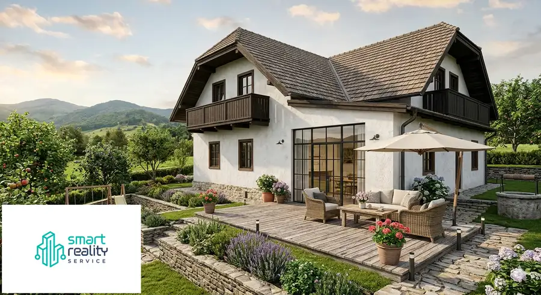
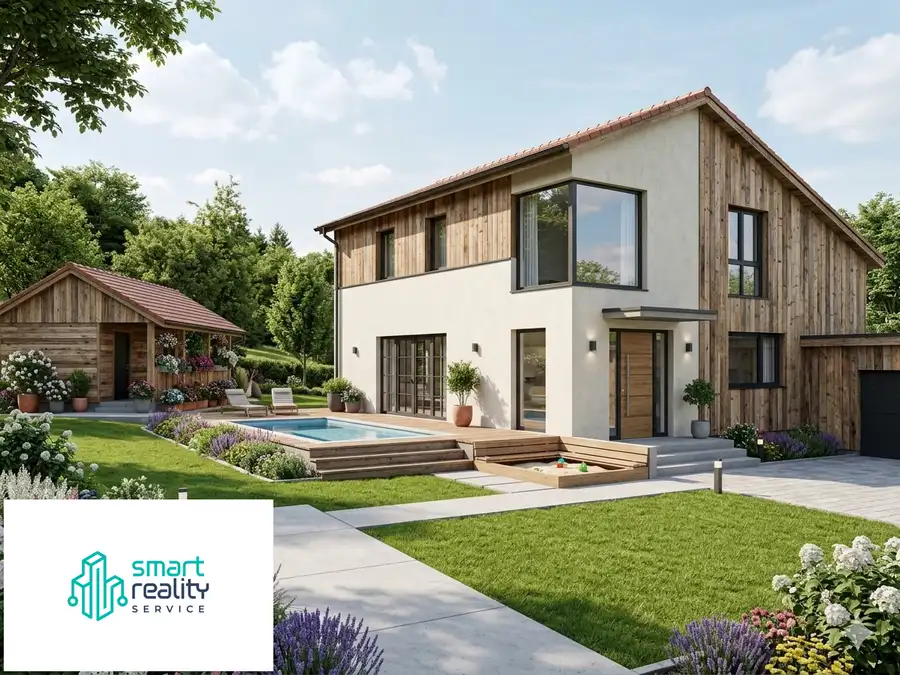
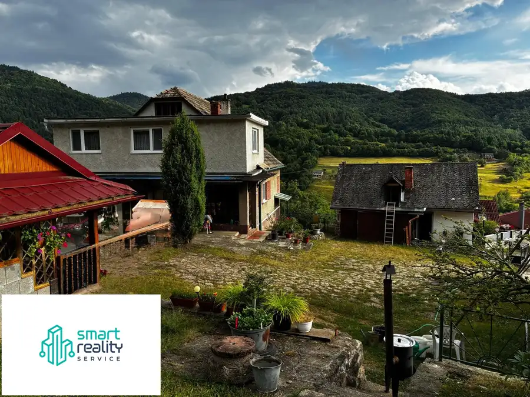
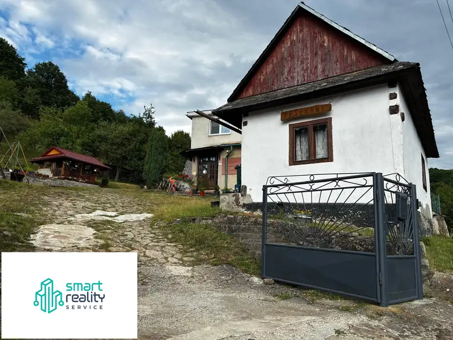
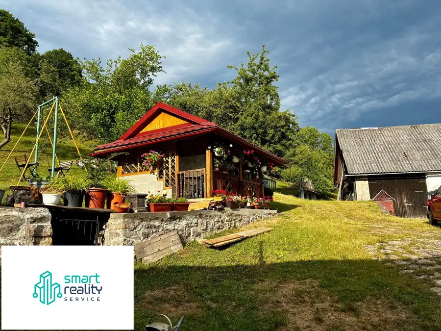
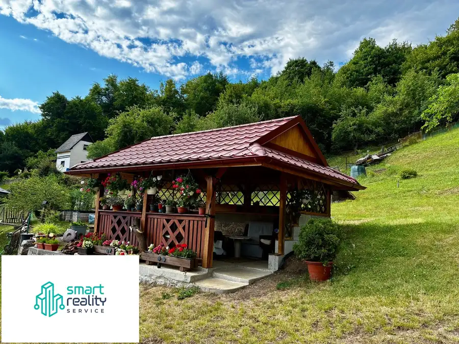

Na predaj rodinný dom s veľkým pozemkom – Vyhne, časť Peserany
Vyhne







- Plocha112 m²
- StavPôvodný stav
- VlastníctvoOsobné
O nehnuteľnosti
NA PREDAJ: Priestranný 6-izbový rodinný dom s ob obrovským pozemkom (3 373 m²) – Vyhne, časť PeseranyRealitná kancelária Smart Reality Service vám exkluzívne ponúka na predaj masívny, celoročne obývateľný rodinný dom s výnimočne veľkým pozemkom v tichej a vyhľadávanej lokalite Štiavnických vrchov.Tento dvojpodlažný, kompletne podpivničený objekt z roku 1966 predstavuje ideálnu investičnú príležitosť pre rodinné bývanie, chalupu na víkendy alebo podnikateľský zámer (penzión/ubytovanie v súkromí) v tesnej blízkosti Vodného raja Vyhne.ZÁKLADNÉ TECHNICKÉ PARAMETRE:Úžitková plocha domu: cca 200 m² (6 samostatných izieb)Rozloha pozemku: 3 373 m² (slnečný, svahovitý, s nádherným výhľadom)Stav objektu: Pôvodný, veľmi zachovalý, suchý a neustále temperovaný.Okná: Už vymenené za plastové (šetrí počiatočné náklady na rekonštrukciu).Konštrukcia: Kompletne podpivničený dom (kotolňa, komora, technické zázemie, potenciál pre vínnu pivnicu).DVE VARIANTY KÚRENIA – ENERGETICKÁ NEZÁVISLOSŤ:Veľkou výhodou domu je flexibilita a pripravenosť na akúkoľvek energetickú situáciu. Systém ústredného kúrenia je napojený na:Plynový kotol – pre maximálne pohodlie a bezstarostnú prevádzku na zemný plyn.Kotol na pevné palivo – pre nezávislosť od externých dodávateľov, nízke prevádzkové náklady a autentickú atmosféru.DISPOZIČNÉ RIEŠENIE:Prízemie: Vstupná chodba, kuchyňa, priestranná obývačka, spálňa, špajza, kúpeľňa a WC. (Dispozícia umožňuje moderné prepojenie do otvoreného denného priestoru).Poschodie: 4 samostatné izby a 2 praktické šatníky / odkladacie priestory (ideálne ako nočná zóna alebo home-office).HOSPODÁRSKY A INVESTIČNÝ POTENCIÁL: K domu prislúchajú dve rozsiahle hospodárske budovy. Pre nového majiteľa predstavujú obrovskú pridanú hodnotu – dajú sa využiť ako profesionálna dielňa, garáže pre techniku, skladové priestory alebo sa dajú prebudovať na ďalšie ubytovacie kapacity. Vzhľadom na vek objektu (1966) nehnuteľnosť navyše spĺňa podmienky pre budúce štátne dotačné programy na obnovu budov.LOKALITA S TRVALOU HODNOTOU:Vyhne – časť Peserany ponúka absolútne ticho a kontakt s prírodou, no s kompletnou občianskou vybavenosťou na dosah.Celoročný Vodný raj Vyhne a kúpele Sklené Teplice len pár minút od domu.Vynikajúca dostupnosť do historickej Banskej Štiavnice (UNESCO), k tajchom (Počúvadlo, Klinger) a lyžiarskemu stredisku Salamandra Resort.CENA: 163 500 €PREČO KÚPIŤ PRÁVE TENTO DOM?Cena nehnuteľnosti v sebe odzrkadľuje mimoriadnu hodnotu samotného pozemku (takmer 34 árov v lukratívnej lokalite), objem stavebného materiálu dvoch podlaží a hospodárske zázemie, ktoré by dnes bolo finančne extrémne náročné postaviť od základu. Ide o stabilnú a bezpečnú investíciu do budúcna.Zabezpečíme vám kompletný právny servis a prepis. Naša skúsená hypošpecialistka vám pomôže s preverením možností financovania v bankách.Kontakt pre obhliadky:Marta Hrmová – 0905 470 614marta@smartrealityservice.skwww.smartrealityservice.sk
Parametre
- Druh
- Rodinný dom
- Dátum zverejnenia
- 11. 07. 2025
- Orientácia
- Juhozápadná
- Plocha pozemku
- 4035 m²
- Počet nadzemných podlaží
- 1
- Počet podzemných podlaží
- 1
- Rok kolaudácie
- 1966
- Rok výstavby
- 1963
- Stav nehnuteľnosti
- Pôvodný stav
- Telekomunikácie
- Internet, Satelit
- Terén pozemku
- Svahovitý
- Typ
- Predaj
- Typ konštrukcie
- Iná
- Vlastníctvo
- Osobné
- Vybavenie
- Pivnica, Špajza, Sklad, Technická miestnosť
- Vykurovanie
- Lokálne
- Zastavaná plocha
- 112 m²
- Úžitková plocha
- 112 m²